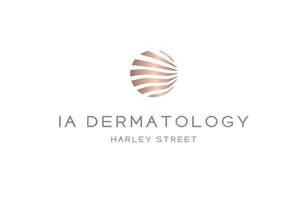

Trade Mark Journal No.2025/025 20 June 2025
UK00004209339 26 May 2025 (3,44)

- Class 3
- Skincare cosmetics; Anti-aging skincare preparations; Anti-aging moisturizers used as cosmetics; Skincare preparations; Moisturisers [cosmetics]; Skin moisturizers used as cosmetics; Anti-aging moisturizers; Suncare lotions [for cosmetic use]; Cosmetic moisturisers; Anti-ageing creams [for cosmetic use]; Cosmetic products in the form of aerosols for skincare; Moisturising skin lotions [cosmetic]; Acne cleansers, cosmetic; Facial moisturisers [cosmetic]; Non-medicated skincare preparations; Skin cleansers [cosmetic]; Moisturising skin creams [cosmetic]; Suncare lotions; Skin moisturisers; Skin care lotions [cosmetic]; Skin care cosmetics; Sunscreen creams [for cosmetic use]; Moisturiser; Exfoliants for the care of the skin; Cosmetic creams and lotions; Hair care creams [for cosmetic use]; Skin make-up; Facial creams [cosmetic]; Skin cleansers [non-medicated]; Cosmetics for use on the skin; Hair cosmetics; Hair moisturizers; Moisturizing preparations for the skin; Moisturising gels [cosmetic]; Dermatological creams [other than medicated].
- Class 44
- Medical consultations; Medical treatment services; Medical clinic services; Medical clinics; Medical services; Provision of medical treatment; Medical and healthcare services; Medical care; Arranging of medical treatment; Health care consultancy services [medical]; Nutritional advisory and consultation services; Medical analysis services; Medical examinations; Medical treatment services provided by clinics and hospitals; Medical testing; Consultation services relating to skin care; Medical screening; Consultation services relating to beauty care.
I A Dermatology Limited